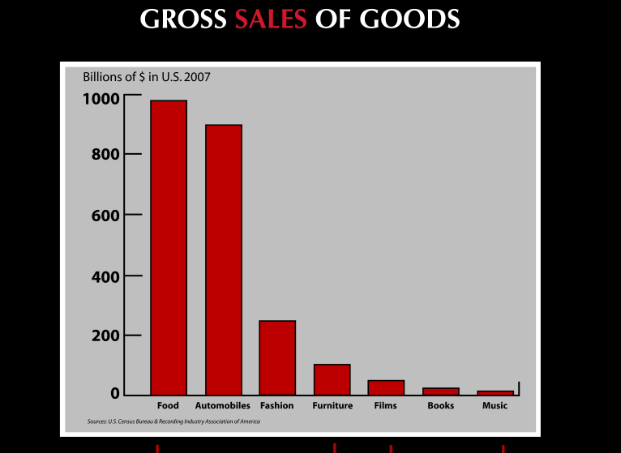

Lecciones del mundo de la moda
El gráfico de más abajo muestra las ventas, en miles de millones de dolares, para el 2007 en diversas industrias, la principal diferencia es el grado de protección a la propiedad intelectual entre ellas. A la izquierda están las que tienen muy baja, o casi ninguna protección a la propiedad intelectual, y a la derecha las industrias con alto grado de protección a la propiedad intelectual:

La gráfica es parte de la presentación que Johanna Blakley dió en TEDxUSC este año.
La presentación es brillante, y cuando llega a este gráfico recibe aplausos. Al fin y al cabo, la moda tiene su base en la imitación, como complementa (sincronía otra vez) muy bien La Valentina (los énfasis son míos):
[…] la imitación se transforma en un instrumento clave de navegación social, imitar al otro implica necesariamente, primero, un reconocimiento de sus señales diferenciadoras y luego una identificación con ellas, constituyéndose en el primer paso en la generación de comunidad la cual termina de constituirse cuando unos y otros hacen suyas y consolidan esas señales como un código compartido o las rechazan estableciendo la diferencia. Es la imitación la que nos otorga esa seguridad de que no estamos equivocados, de que no nos hemos salido erróneamente de los márgenes delimitados por el grupo al cual pertenecemos, o bien no nos alejamos aun más de ese grupo de personas al cual queremos que nos relacionen. Es por tanto la imitación la manera más segura de sentirse parte de algo, y por tanto de sentirse especial y distinguido respecto de quienes aún no logran alcanzar este carácter de especial. Es también desde aquí desde donde buscamos la diferencia, aquello que no nos hace como esos, pero que indefectiblemente busca encontrar su sentido en otros, otros.
fuente: http://www.valevenegas.com/2010/07/un-poco-largo-lo-se.html
La imitación es la base para empezar a innovar. Creo que estas lecciones son importantes, y debemos reflexionar sobre esto, es gratificante escuchar estas lecciones.
Les dejo el video:
Hay subtítulos: http://www.ted.com/talks/lang/spa/johannablakleylessonsfromfashionsfree_culture.html